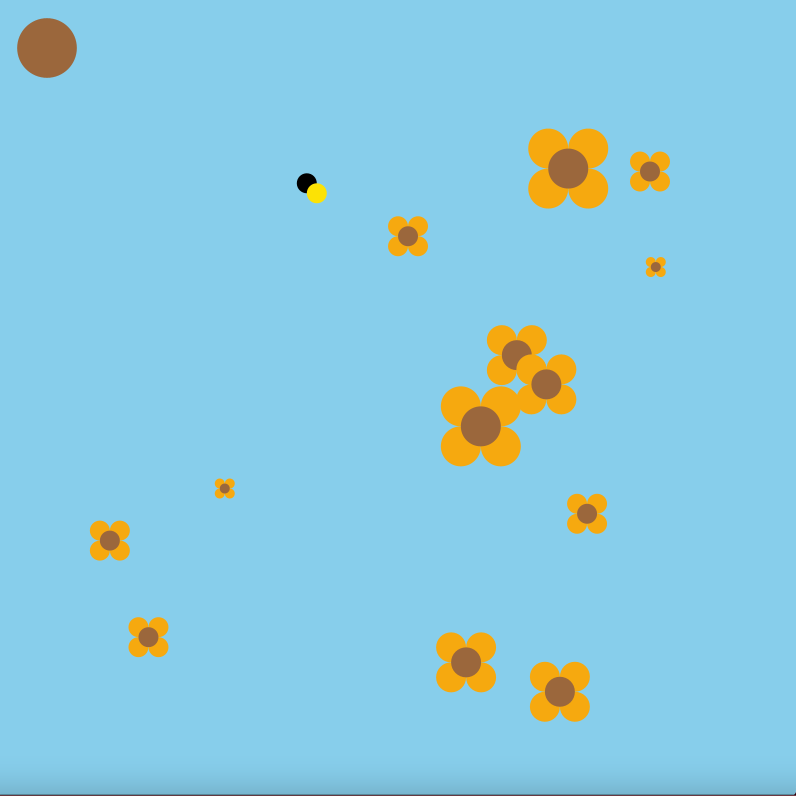
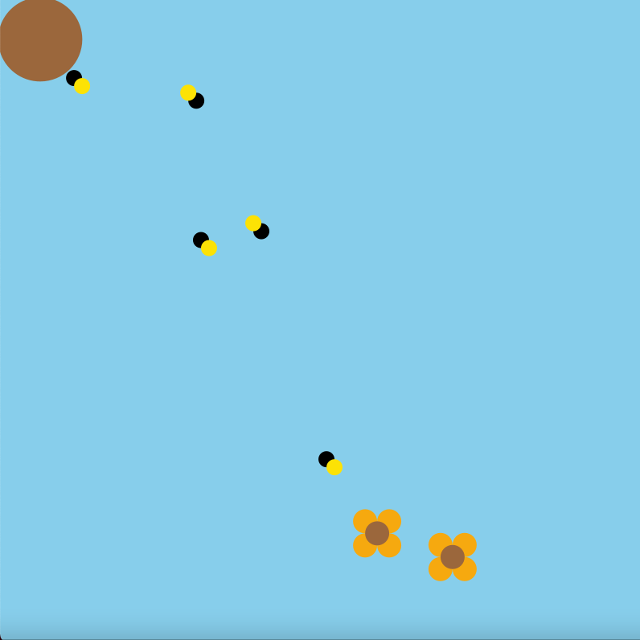
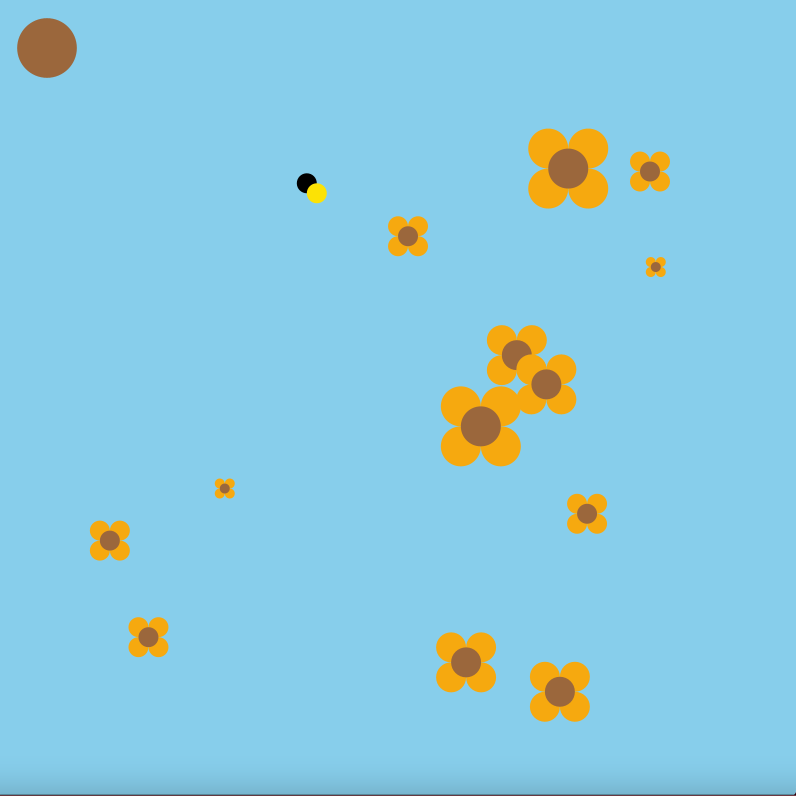
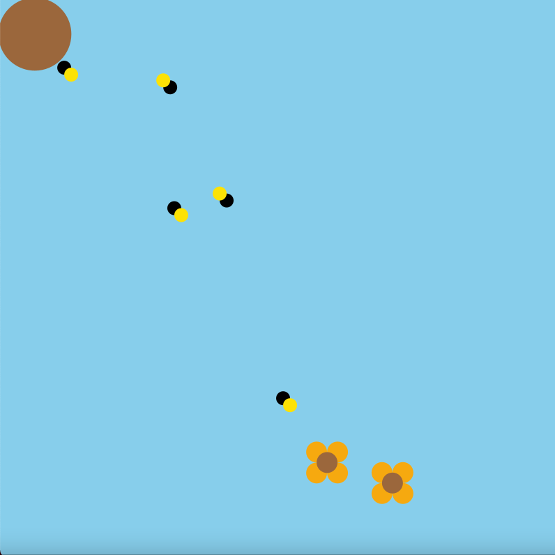

Project 1
Why did you decide to work on this topic, what's your interest there?
The bee diversity has declined massively over the last couple of years, causing them to be endangered. Our planet simply can not survive without bees and it is up to us to save them. By creating this bee natural system I hope to bring more awareness to the extinction of bees.
How did you envision your system in the beginning and how did that vision change?
In the beginning I had envision incorporating a bee collecting honey from a flower and then taking the honey back to the beehive. Although since then I have incorporated multiple flowers that multiple bees come out of the beehive to collect and bring back to the beehive making it bigger, each time more honey is collected.
At least one image of your diagram.

How did you translate your diagram into code?
The diagram was very helpful in helping me to understand which functions each object would have and how they would all be intertwined which each other.
How did you deal with the complexity in your system?
Through help from online resources, it allowed me to understand different formulas that helped me to do what I needed to complete the bee natural system.
How did you decide on the interactive elements?
To make the bee natural system more complex I wanted to be able to add more flowers for the bees to catch rather than a set amount. By pressing the space bar you can add as many flowers as the user wants. I also wanted to make it more interesting by creating multiple bees going after the flowers and by pressing the mouse it creates multiple bees that will go and attack the flowers.
What would be some paths for future development of the project?
For the future, I wanted to create different types of flowers that would also give each bee a different honey count. Possibly making it an interactive game that scores how much honey bees can collect within a certain time limit.
Code Examples:
// adds honey when bee brings flower back
void addHoney() {
this.honeyCount++;
this.size += 0.5;}
// caculates distance from bee to flower
double distanceToFlower(Sunflower flower) {
return Math.sqrt((this.position.x - flower.position.x) * (this.position.x -
flower.position.x) + (this.position.y - flower.position.y) * (this.position.y -
flower.position.y));}
// if bee is not busy check distance to flower, go to closest flower and set as new target
if (flowers.size() != 0 && !busy) {
print("seeking\n");
if (target == null) {
Sunflower closest = flowers.get(0);
double closestDist = Double.MAX_VALUE;}}
// checks distance to each flower and finds closest
for (Sunflower flower : flowers) {
double currDist = this.distanceToFlower(flower);
if (currDist <= closestDist && !hive.targets.containsKey(flower)) {
closest = flower;
closestDist = currDist;}}
 


